4. 分岐とカオス
力学系において, 解の挙動は平衡点やリミットサイクルの存在, およびその安定性に強く影響される. 力学系にパラメータが含まれている場合, そのパラメータを動かしたとき, 例えばある臨界値を境に平衡点が新たに現れる, 消滅するといったことが起こり得る. 一般に, 力学系では臨界点付近のパラメータの変化により, 解の挙動の劇的な違いを説明することができるが, このような現象は力学系の 分岐 (bifurcation) と呼ばれる.
分岐現象が観察される力学系を, 現象を再現する数理モデルとして用いることで, 現象の多様な状態をパラメータの違いにより説明することができる. また, 力学系の解は, パラメータを変化させた際の分岐によりカオス的挙動に遷移することもある. 比較的単純な式から複雑な挙動を表現することができることは, カオス理論の興味深い点であり, それと関連する分岐現象も重要な概念である.
ここでは, 特徴に基づき様々な名前を付けられた分岐について紹介し, またカオス的な挙動をする自励系の具体例について言及する.
4.1: 分岐のいくつかの具体例
まず, 高次元の力学系において分岐の様子をイメージしやすくするために, 分岐図 というアイデアを導入する. 分岐図は, 解の挙動がパラメータの変化にどのように影響を受けるかを理解する際に役立つものである:
パラメータを含む力学系の解の挙動を考える.
- パラメータに依存して平衡点やリミットサイクルがどのように変化するかを表す図を 分岐図 (bifurcation diagram) という.
- 典型的には, 横軸にパラメータ, 縦軸に平衡点やリミットサイクルを表す "値" を用いてプロットされる.
- 例えば安定な平衡点やリミットサイクルは実線で, 不安定な平衡点やリミットサイクルは点線で表す, もしくは安定性によって色を変えるなど区別して描画されることが多い.
一次元力学系 \[ x' = r + x^2 \] を考える, ここで $r\in\mathbb{R}$ はパラメータである. いま, $f(x) = r+x^2$ とおくと, $f(x) = 0$ となる $x$ が平衡点であり, $f(x)$ の符号により $x(t)$ が時間経過により大きくなるか小さくなるかが判定できる.
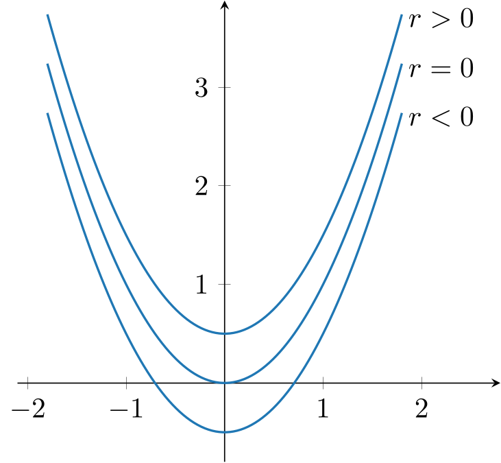
実際, 必要なら $f(x)$ のグラフをプロットすることで,
- $r\lt 0$ のときは $x = -\sqrt{-r}$ が安定な平衡点であり, $x = \sqrt{-r}$ が不安定な平衡点である,
- $r=0$ のときは $x = 0$ が鞍点である,
- $r\gt 0$ のときは, 平衡点は存在しない
ことがわかる. このことを図として表したものが分岐図であり, この場合は例えば以下のようになる:
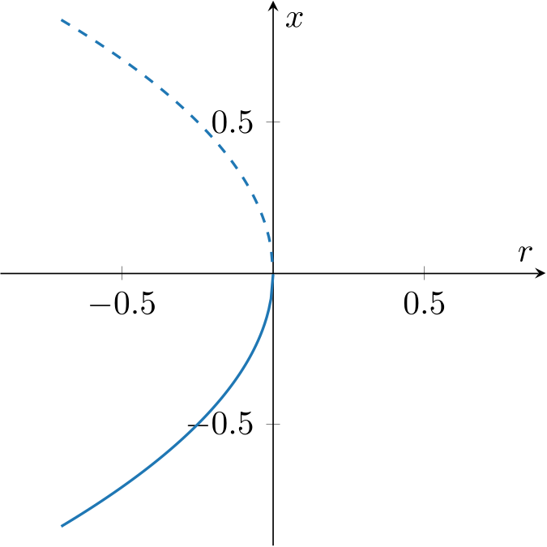
横軸はパラメータ $r$ とし, 縦軸は一次元力学系の場合は平衡点の座標とすれば良い. ここでは実線はパラメータ $r$ を変化させた際の安定な平衡点の座標の変化を, 点線は不安定な平衡点を表している. このように, パラメータを変化させることで平衡点の安定性や存在が変化し, 解の挙動も $r=0$ を境に大きく異なることがわかる.
なお, このように源点と沈点があるパラメータで衝突し平衡点が消滅する (もしくは平衡点が存在しない状態からパラメータを変化させると平衡点が出現し, 源点と沈点に分離する) というタイプの分岐を サドルノード分岐 (saddle node bifurcation) という.
一次元力学系 \[ x' = rx - x^2 \] を考える, ここで $r\in\mathbb{R}$ はパラメータである. この力学系の平衡点は,
- $r\lt 0$ のときは $x = 0$ が安定な平衡点であり, $x = r$ が不安定な平衡点である,
- $r=0$ のときは $x = 0$ が鞍点である,
- $r\gt 0$ のときは, $x = r$ が安定な平衡点であり, $x = 0$ が不安定な平衡点である,
このように, パラメータを変化させた際に平衡点の安定性が交換される分岐を トランスクリティカル分岐 (transcritical bifurcation) という.
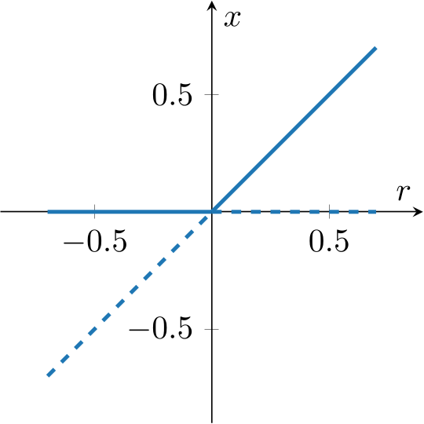
- $r\lt 0$ のときは $x = 0$ が安定な平衡点である,
- $r=0$ のときは $x = 0$ が安定な平衡点である (が, 線形項が消失することから収束の速さは指数的減衰から代数的減衰に変化する),
- $r\gt 0$ のときは, $x = \pm\sqrt{r}$ が安定な平衡点であり, $x = 0$ が不安定な平衡点である,
このように, パラメータを変化させた際に $1$ つ平衡点が$3$ つの平衡点に分裂するような分岐を (分岐図の形状から) ピッチフォーク分岐 (pitchfork bifurcation) もしくは 熊手型分岐 という. なお, この例のように, あるパラメータに対して安定な平衡状態が $2$ つ存在する状況を 双安定 (bistable) であるという.
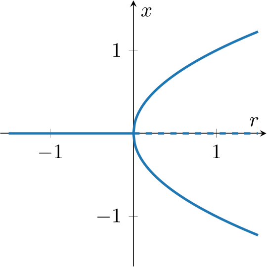
この例では安定な平衡点が不安定化し, 代わりに $2$ つの安定な平衡点が現れるが, このようなピッチフォーク分岐を特に 超臨界ピッチフォーク分岐 (supercritical pitchfork bifurcation) という. 逆に, パラメータを変化させた際に不安定な平衡点が安定化, 代わりに $2$ つの不安定な平衡点が現れるピッチフォーク分岐を 亜臨界ピッチフォーク分岐 (subcritical pitchfork bifurcation) という. 言い方を変えれば, 亜臨界ピッチフォーク分岐では (サドルノード分岐と同様に) パラメータの変化により安定な平衡解が不安定な平衡解と合流して安定でなくなる, という現象が起こる.
これに関連して, もう一つの例として \[ x' = rx + x^3 - x^5 \] という一次元力学系を考えてみよう. 分岐図を描くと, $r=0$ において亜臨界ピッチフォーク分岐が, $r=-1/4$ においてサドルノード分岐が起こることがわかる.
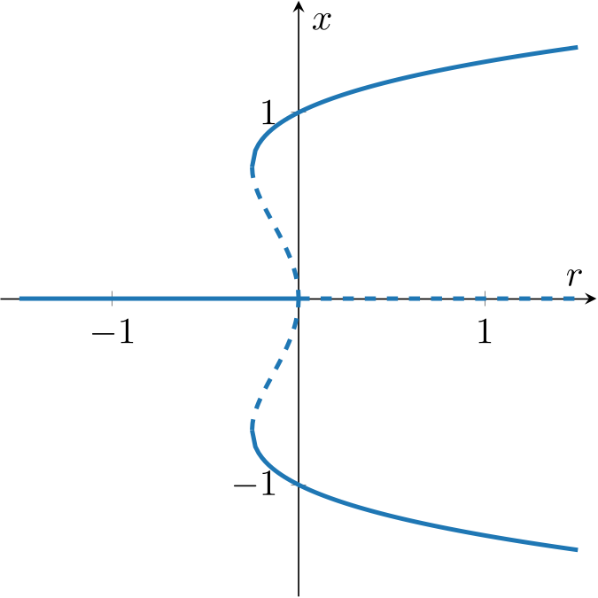
この問題に対し, パラメータが時間に依存して変化する状況を考えると, 解は "パラメータをどのように変化させたか" に依存することになる. 例えば初期値を $x=0$ の近くに与え, $r$ をゆっくりと増加させる. パラメータ $r$ が負である間は, 解は $x=0$ に近づこうとするが, $r=0$ を境に $x=0$ は安定な平衡解では無くなってしまい, 解は異なる平衡解近づこうとする. 今度は逆に $r$ をゆっくりと減少させると, $r=-1/4$ を境に安定な平衡解は $x=0$ しか存在しなくなり, 系の状態のジャンプが発生する. このように, 系の状態変化はパラメータ変化や状態の "履歴" に依存することがある. このような性質は ヒステリシス (hysteresis) と呼ばれ, 様々な現象において観察されるものであるが, 双安定性やピッチフォーク分岐などはこのような現象を数理モデルで再現する際に有用な特徴を持つ.
ここでは $2$ 次元力学系 \[ \left\{\begin{array}{rl} x' &= \mu x - \omega y - (x^2+y^2)x, \cr y' &= \omega x + \mu y - (x^2+y^2)y \end{array}\right. \] を考えよう, ただし $\mu$, $\omega$ はパラメータであり, $\omega\gt0$ とする. まず, 原点 $\mathbf{0}$ が平衡点であることは明らかであり, 右辺を $\mathbf{f}(\mathbf{x})$ と表すことにすると, ヤコビ行列 \[ D\mathbf{f}(\mathbf{0}) = \begin{pmatrix} \mu & -\omega \cr \omega & \mu \end{pmatrix} \] の固有値は $\lambda = \mu\pm i\omega$ なので, 線形安定性解析より $\mu\gt0$ ならば $\mathbf{0}$ は漸近安定な平衡点であり, $\mu\gt0$ ならば $\mathbf{0}$ は不安定な平衡点である.
さて, この問題を極座標表示を用いて書き直してみよう: $r\gt0$ を用いて $x=r\cos\theta$, $y=r\sin\theta$ と表すことで \[ \left\{\begin{array}{rl} r'\cos\theta - r\theta'\sin\theta &= \mu r\cos\theta - \omega r\sin\theta - r^3\cos\theta, \cr r'\sin\theta + r\theta'\cos\theta &= \omega r\cos\theta + \mu r \sin\theta - r^3\sin\theta \end{array}\right. \] すなわち \[ \begin{pmatrix} \cos\theta & -\sin\theta \cr \sin\theta & \cos\theta \end{pmatrix}\begin{pmatrix} r' - (\mu r-r^3) \cr r(\theta' - \omega) \end{pmatrix} = \mathbf{0} \] が得られるため, これを解いて \[ \left\{\begin{array}{rl} r' &= \mu r - r^3 \cr \theta' &= \omega \end{array}\right. \] が得られる. ここから ($r\ge0$ に注意すると), $\mu\gt 0$ の場合は $r=\sqrt{\mu}$ で表される安定なリミットサイクルが存在することがわかる.
これを分岐図に表してみよう. パラメータ $\omega\gt0$ は固定することにして, パラメータ $\mu$ を分岐図の横軸にする. 縦軸には安定な平衡点, リミットサイクルに対する $r$ の値を用いることにしてみよう. このとき以下の図のように, 安定な平衡点が不安定化し, 代わりに安定な周期解が現れる様子を表すことができる.
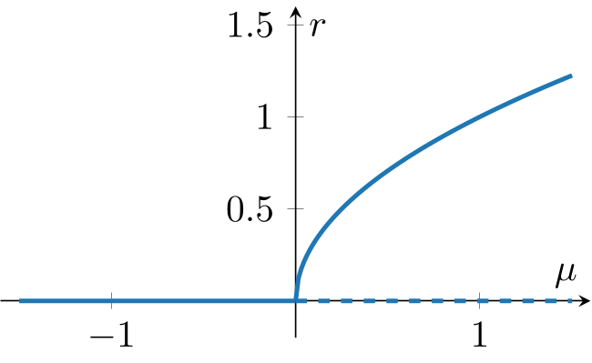
このような分岐は, 線形化問題の複素共役な $2$ つの固有値が, パラメータを変化させた際に虚軸を横切ることで発生するものであり, ホップ分岐 (Hopf bifurcation) と呼ばれる. 上の例は 超臨界ホップ分岐 (supercritical Hopf bifurcation) であり, 不安定な平衡点が安定に転じると同時に不安定な周期解が現れる 亜臨界ホップ分岐 (subcritical Hopf bifurcation) も知られている.
上で言及したように, ホップ分岐は線形化問題の複素共役な $2$ つの固有値が, パラメータを変化させた際に虚軸を横切ることで起きると説明される. 一方で, サドルノード分岐, トランスクリティカル分岐およびピッチフォーク分岐は, 線形化問題の実軸上にある固有値が, パラメータを変化させた際に虚軸を横切ることで起きる, と説明することができる.
さて, 以上では一次元力学系に対するサドルノード分岐, トランスクリティカル分岐およびピッチフォーク分岐, および二次元力学系に対するホップ分岐を紹介した. 上で紹介したものは, 実は各分岐に対する 標準系 と呼ばれるものであり, 例えば二次元以上の力学系に対するサドルノード分岐, トランスクリティカル分岐やピッチフォーク分岐を判定する際に手掛かりとなる情報である. 実際にはこれら以外にも様々なタイプの分岐が知られているが, この資料ではこれ以上は深入りしない.
ここでは具体例として \[ \left\{\begin{array}{rl} x' &= 2rx - x^3 - xy, \cr y' &= -y + x^2 \end{array}\right. \] という 二次元力学系を考えてみる. まず, 平衡点は \[ \left\{\begin{array}{rl} 2rx - x^3 - xy &= 0, \cr -y + x^2 &= 0 \end{array}\right. \] を解くことで得られるが, $r\le 0$ ならば平衡点は $\mathbf{0}$ の $1$ 点のみである. 一方, $r\gt 0$ ならば \[ \mathbf{0},\quad \widetilde{\mathbf{x}}_1 = \left(\sqrt{r}, r\right),\quad \widetilde{\mathbf{x}}_2 = \left(-\sqrt{r}, r\right) \] の $3$ 点が平衡点となる. つまり $r=0$ において, $\mathbf{0}$ という平衡点が $3$ つに分離していることになり, この時点で $r=0$ においてピッチフォーク分岐が起きていると推測できる.
次に, 線形安定性解析を試みよう. 右辺のベクトル場 \[ \mathbf{f}(\mathbf{x}) = \begin{pmatrix} 2rx - x^3 - xy \cr -y + x^2 \end{pmatrix} \] のヤコビ行列が \[ D\mathbf{f}(\mathbf{x}) = \begin{pmatrix} 2r - 3x^2 - y & -x \cr 2x & -1 \end{pmatrix} \] となることから, $D\mathbf{f}(\mathbf{0})$ の固有値は $-1$, $2r$ であり, 従って平衡点 $\mathbf{0}$ は $r\lt0$ のとき安定, $r\gt0$ のとき鞍点であり不安定となる (特に $r$ を変化させた際に, 実軸上の固有値が虚軸を横切るように変化することを確認できる). 一方で, $r\gt 0$ の際に $\widetilde{\mathbf{x}}_1$, $\widetilde{\mathbf{x}}_2$ におけるヤコビ行列を調べることで, これらが安定な平衡点であることが確認できる. 実用上は, これらの情報からこの分岐は二次元力学系における超臨界ピッチフォーク分岐だと判断できる.
パラメータ $r$ を含む一次元力学系 \[ x' = rx - x^3 + \varepsilon \] について, 分岐が起きる $r$ と分岐の種類を求めよ, ただし $\varepsilon\gt 0$ は定数とする.
まず, 平衡点は $y=rx-x^3$ と $y=-\varepsilon$ の交点であることに注意. いま, $y=rx-x^3$ は $r\gt0$ ならば $x=-\sqrt{r/3}$ において極小値 $-2r/3\sqrt{r/3}$ を持つため, これが $-\varepsilon$ より大きければ平衡点は $1$ つ, 小さければ平衡点は $3$ つ存在する. つまり \[ r_0 = \left(\dfrac{27}{4}\varepsilon^2\right)^{\frac{1}{3}} \] とおくと, $r=r_0$ において分岐が起きている.
次に, この分岐の種類について考える. 自励系の右辺 $f(x) = rx-x^3+\varepsilon$ の符号を (必要ならプロットして) 考えると, $x\ge 0$ には常に安定な平衡点が $1$ つ存在し, $r\gt r_0$ ならば $x\lt 0$ の部分に (既に存在する平衡点とは異なる部分に) 安定な平衡点と不安定な平衡点が一つずつ出現する. 従って, この分岐はサドルノード分岐である ($1$ つの平衡点が $3$ つに分裂しているわけではないため, ピッチフォーク分岐では無い).
4.2: ローレンツ方程式
ここからは力学系における カオス の具体例を見てみよう. まず, カオスとは何かという疑問はもっともであり, 実際に力学系におけるカオスを特徴づける性質を数学的に定義することもできるが, ここでは詳細な説明はしない. 代わりに, カオス的な挙動に見られる典型的な性質をいくつか紹介することにする.
- 初期値鋭敏性 を持つ, つまり初期値の微小な差 $\delta_0$ による時刻 $t$ における解の差 $\delta(t)$ が指数関数的に増大する.
- 具体的には $|\delta(t)| \approx e^{\lambda t}|\delta_0|$ となる $\lambda$ が正であることと説明される. これに基づき, 初期値鋭敏性は典型的には リアプノフ指数 (Lyapunov exponent) \[ \lambda = \lim_{t\to\infty}\lim_{|\delta_0|\to 0}\dfrac{1}{t}\ln \dfrac{|\delta(t)|}{|\delta_0|} \] により評価される. リアプノフ指数は $\delta_0$ の "方向" の数だけ (つまり力学系の次元の数だけ) 存在することに注意.
- 有界である. 例えば解自体が指数的に増大するような力学系は正のリアプノフ指数を持つとしてもカオス的とは見做されない.
- ある種の "稠密性" を持つ. 連続力学系ならば解の軌道がある範囲を埋め尽くすように動く, と説明される.
カオス的な挙動の具体例として, ここでは (有名な) ローレンツ方程式 を扱う: \[ \left\{\begin{array}{rl} x' &= \sigma(y-x), \cr y' &= x(\rho-z)-y, \cr z' &= xy-\beta z. \end{array}\right. \] この自励系は $3$ つのパラメータ $\sigma$, $\rho$, $\beta$ を持つが, 特に $\sigma = 10$, $\rho=28$, $\beta=8/3$ とした際の解が以下のようになることがよく知られている (左は初期値 $(1, 1, 1)$ に対する計算結果, 右は初期値 $(-1, -1, -1)$ に対する計算結果):
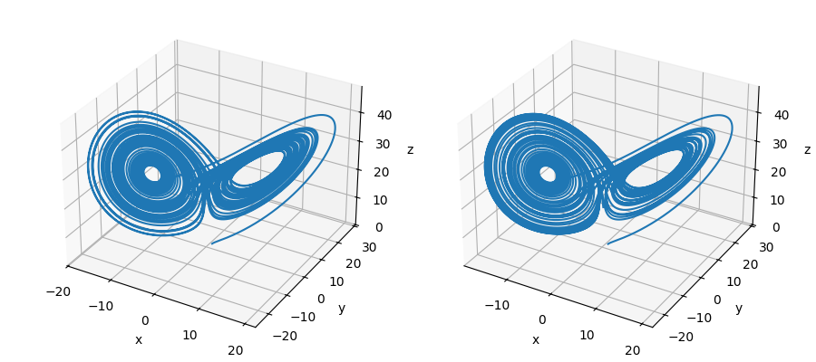
ただしこのプロットはあくまで数値計算結果であることに注意する必要がある. 実際には初期値鋭敏性のため, カオス的挙動の数値解は誤差の影響を強く受け, 厳密解から離れてしまう (ただしここでは気にしないことにする). ローレンツ方程式は気象現象に対する単純化された数理モデルとして提案されたものであるが, 比較的単純な連立常微分方程式が予測不能な解の挙動を導出する典型例として扱われる.
さて, ここではパラメータ $\rho$ に注目し, どのように分岐が起こるのかを見てみよう. 以降, 常に $\sigma=10$, $\rho\gt0$, $\beta=8/3$ とする.
- まずは $0\lt \rho \le 1$ のときは平衡点は $\mathbf{0}$ のみであり, $\rho\gt 1$ ならば \[ \mathbf{0},\quad \widetilde{\mathbf{x}}_1 = (\sqrt{\beta(\rho-1)}, \sqrt{\beta(\rho-1)}, \rho-1),\quad \widetilde{\mathbf{x}}_2 = (-\sqrt{\beta(\rho-1)}, -\sqrt{\beta(\rho-1)}, \rho-1) \] の $3$ つが平衡点であることは簡単に確認できる.
- 次に線形安定性解析を試みよう: ローレンツ方程式の右辺 \[ \mathbf{f}(\mathbf{x}) = \begin{pmatrix} \sigma(y-x) \cr x(\rho-z)-y \cr xy-\beta z \end{pmatrix} \] のヤコビ行列は \[ D\mathbf{f}(\mathbf{x}) = \begin{pmatrix} -\sigma & \sigma & 0 \cr \rho-z & -1 & -x \cr y & x & -\beta \end{pmatrix} \] である.
- これを用いると, $D\mathbf{f}(\mathbf{0})$ の固有値は \[ \lambda = -\beta,\quad \dfrac{1}{2}\left(-(\sigma+1)\pm \sqrt{(\sigma+1)^2 - 4\sigma(1-\rho)}\right) \] である. 特に, $0\lt \rho\lt 1$ ならば全ての固有値は負の実数であり, 従って $\mathbf{0}$ は漸近安定な平衡点である. 一方, $\rho\gt 1$ ならば正の実数の固有値が $1$ つ現れるため, $\mathbf{0}$ は鞍点となる.
- もっといえば, $\rho\gt 1$ のとき $\mathbf{0}$ に対して $2$ 次元安定多様体 (曲面状の局所安定多様体) と, $1$ 次元不安定多様体 (曲線状の局所不安定多様体) が存在する.
- さて, $D\mathbf{f}(\widetilde{\mathbf{x}}_1)$ および $D\mathbf{f}(\widetilde{\mathbf{x}}_2)$ の固有値は
\[
\lambda^3 + (1+\sigma+\beta)\lambda^2 + \beta(\sigma+\rho)\lambda + 2\sigma\beta(\rho-1) = 0
\] の根であり, ($\widetilde{\mathbf{x}}_1$, $\widetilde{\mathbf{x}}_2$ が平衡点となるのは $\rho\gt1$ の場合に限られることに注意して) 特に $\rho=1$ のときの根を考えれば, ある $\rho^*\gt 1$ が存在して
\[
1\lt \rho \lt\rho^*
\] に対して全ての固有値は負の実部を持ち, 従って $\widetilde{\mathbf{x}}_1$, $\widetilde{\mathbf{x}}_2$ が漸近安定な平衡点であることがわかる.
- なお, このような $\rho^*$ の上限を求めるには, ちょうど $\rho=\rho^*$ のときに実部が $0$ の固有値が現れることから \[ \lambda^3 + (1+\sigma+\beta)\lambda^2 + \beta(\sigma+\rho^*)\lambda + 2\sigma\beta(\rho^*-1) = (\lambda+\alpha)(\lambda+i\omega)(\lambda-i\omega) \] という形になっていることに注目して式変形すれば良い ($\sigma=10 \gt 1+8/3 = 1+\beta$ に注意): \[ \rho^* = \sigma\dfrac{\sigma + \beta + 3}{\sigma-\beta-1} = \dfrac{470}{19} \approx 24.737. \]
- 実は上で求めた $\rho^*$ に対して, $\rho=\rho^*$ でホップ分岐が起こることで $\widetilde{\mathbf{x}}_1$, $\widetilde{\mathbf{x}}_2$ が不安定な平衡点に転じることが知られている. ただし, 安定なリミットサイクルが発生するわけではない: 解は局所的には平衡点の周りをまわるような挙動をするが, 大域的な影響でリミットサイクルにはならない.
- さらに言えば, 実はある $\rho^{**}\in (1, \rho^*)$ において, 鞍点 $\mathbf{0}$ でのホモクリニック軌道が存在することが知られている. この値 ($\rho^{**} \approx 13.926$) からさらに $\rho$ を大きくすることで, ホモクリニック軌道からの変動によりカオス的挙動が現れようとするが, $\widetilde{\mathbf{x}}_1$, $\widetilde{\mathbf{x}}_2$ が漸近安定である間は解の軌道が平衡点に収束しようとする影響があるためカオス的にはならない. さらに $\rho$ が大きくなり, 平衡点 $\widetilde{\mathbf{x}}_1$, $\widetilde{\mathbf{x}}_2$ の安定性が失われることで, カオス的挙動が観察されるようになる.
- 例えば $\rho=28$ のときの計算結果をみると, 解の軌道は蝶の羽のような形をした曲面上に引き寄せられ, その付近を動いている様子が観察されるが, これは曲面状のアトラクターが存在していることを意味している. カオス的な挙動を生み出すアトラクターは ストレンジアトラクター もしくは カオスアトラクター と呼ばれる. 特にローレンツ方程式において観察されるストレンジアトラクターは ローレンツアトラクター と呼ばれ, 数多くの研究がなされている.
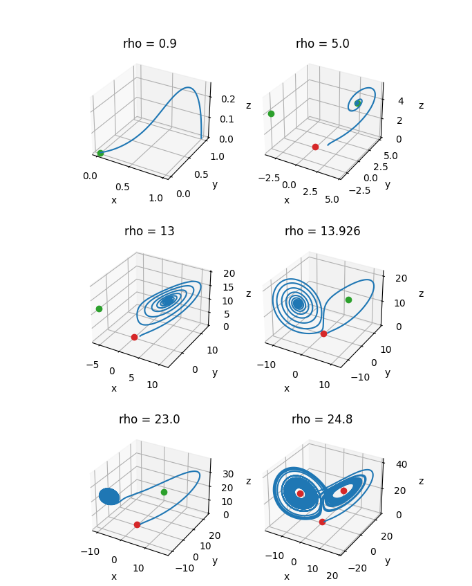
さて, この計算結果は $3$ 次元のプロットとして表しているが, ポアンカレ写像のアイデアを用いることで $2$ 次元もしくは $1$ 次元の離散力学系として扱うことも可能である. 典型的には, $2$ つの平衡点 $\widetilde{\mathbf{x}}_1$, $\widetilde{\mathbf{x}}_2$ の $z$ 座標が $\rho-1$ であることに注目して, \[ \Sigma = \{(x,y,z)\in\mathbb{R}^3: z = \rho-1\} \] というポアンカレ断面を考える. この断面を, 解が下から上へ通り抜ける際の交点を順番に取り出したものを \[ \mathbf{x}_0,\quad \mathbf{x}_1 = P(\mathbf{x}_0),\quad \mathbf{x}_2 = P(\mathbf{x}_1) = P^2(\mathbf{x}_0), \quad \dots \] とおくと, これは $\mathbb{R}^2$ 上の離散力学系とみなせる, ここで $P:\mathbb{R}^2 \to\mathbb{R}^2$ はポアンカレ写像である. 下図の左が $\rho=28$ のときのローレンツ方程式の解とポアンカレ断面の交点をオレンジの点としてプロットしたもの, 中央がそれを $2$ 次元平面上で表したものである. 各オレンジの点がポアンカレ写像により構成される離散力学系 $\mathbf{x}_n = P^n(\mathbf{x}_0)$ を表している.
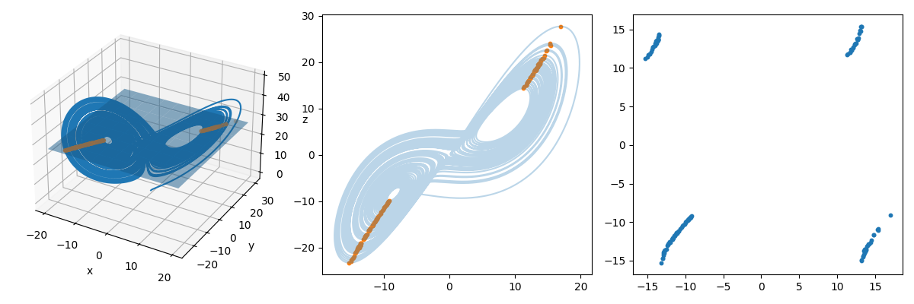
これらのプロットだけでは, 離散力学系の時間発展 \[ \mathbf{x}_{n+1} = P(\mathbf{x}_n) \] がわかりづらい. そこで, 離散力学系における点 $\mathbf{x}_n$ の $x$ 座標だけを取り出すことで $x_n$ からなる $1$ 次元離散力学系に簡略化してみよう. これは近似的に \[ x_{n+1} = f(x_n) \] という離散力学系であるとみなすことができる. ここで, 各 $n$ に対し横軸に $x_n$, 縦軸に $x_{n+1}$ をプロットしてものを上図の右に示す. これは $1$ 次元離散力学系 $x_{n+1} = f(x_n)$ を与える写像 $f$ の概形を表していると思えるが, $f(x)$ はある値を境に不連続にジャンプしていることを示している. ローレンツ方程式の解は $2$ つの平衡点 $\widetilde{\mathbf{x}}_1$, $\widetilde{\mathbf{x}}_2$ を中心とする円盤状の領域 (これを ローブ と呼ぶことがある) を動くが, このプロットはポアンカレ断面通過時の $x$ 座標の値により, 解がもう一方のローブに切り替わる様子を表している. このような振る舞いを容易に捉えることができることが, ポアンカレ写像を用いて低次元の離散力学系に置き換えるというテクニックの利点である.
4.3: カオス的な離散力学系
先ほども言及したように, 連続力学系におけるカオス的挙動を説明する際に, ポアンカレ写像などを用いて離散力学系と対応づけることができる. カオス的な挙動を生み出すメカニズムを説明するような離散力学系はいくつか考えられるが, ここではその具体例をいくつか紹介する. 残念ながら, 離散力学系の性質についてこの資料では深入りしないが, カオスの解析に関する理論の入り口を紹介したい.
まず, 一次元離散力学系がどのような挙動をするかを考えたい. そのために, グラフ反復法 もしくは クモの巣図法 と呼ばれる方法を導入しよう. 与えられた離散力学系 $x_{n+1} = f(x_n)$ に対し, 横軸を $x_n$, 縦軸を $x_{n+1}$ として $x_{n+1} = f(x_n)$ のグラフと $x_{n+1} = x_n$ のグラフをプロットする. このとき:
- 与えられた $x_n$ に対し, $(x_n, x_n)$ から垂直に引いた線と $x_{n+1} = f(x_n)$ のプロットとの交点は $(x_n, f(x_n)) = (x_n, x_{n+1})$ である.
- 得られた交点 $(x_n, x_{n+1})$ から水平に引いた線と $x_{n+1} = x_n$ のプロットとの交点として, 点 $(x_{n+1}, x_{n+1})$ が得られる, この点が $x_{n+1}$ を表す.
この手順を $n=0$ から繰り返すことで, 離散力学系の解の挙動をわかりやすく図示することができる, なお, $x_0$ は与えられた初期値とする. ところで, $x_{n+1} = f(x_n)$ と $x_{n+1} = x_n$ の交点は $f(x_n) = x_n$ を満たす点を表しており, これは写像 $f$ の不動点, 従って離散力学系 $x_{n+1} = f(x_n)$ の平衡点に対応している.
一次元離散力学系 \[ x_{n+1} = f(x_n) = \sqrt{x_n} \] を考える. いま, $x_{n+1} = f(x_n)$ と $x_{n+1} = x_n$ の交点は $(0,0)$ と $(1,1)$ であり, これは $x=0, 1$ の $2$ つが離散力学系の平衡点であることを意味している. グラフ反復法により適当に与えた初期値に対する解の挙動を図示すると, $x=1$ に収束する様子を確認できる.
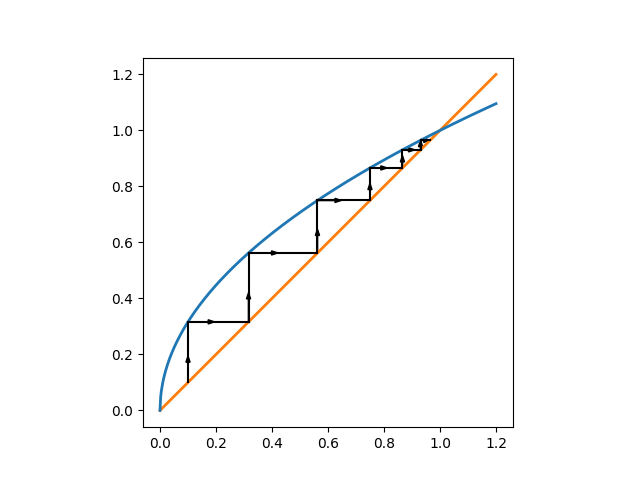
一次元離散力学系 $x_{n+1} = f(x_n)$ の平衡点は写像 $f$ の不動点のことであったため, 上の例のようにグラフ反復法における $x_{n+1} = f(x_n)$ と $x_{n+1} = x_n$ の $2$ とのプロットの交点として表現される. 離散力学系の平衡点には, 連続力学系と同様に安定なものと不安定なものが存在する. 平衡点近傍の点を初期値 $x_0$ としたとき, $x_n = f^n(x_0)$ がその平衡点の近傍にとどまるならば安定であり, 特に平衡点に収束するならば漸近安定である. 安定でないならば平衡点は不安定であり, 特に平衡点近傍の任意の点 $x_0$ に対し, $x_n = f^n(x_0)$ が平衡点から離れるならば平衡点は源点である. 上の例では, $x=1$ が安定な平衡点であり, $x=0$ は不安定な平衡点である.
連続力学系においては, 平衡点におけるヤコビ行列 (つまり微分) の値により安定性を判定できたが, 離散力学系でも (若干異なるが) $f'$ の値により安定性を判定することができる:
一次元離散力学系 $x_{n+1} = f(x_n)$ の平衡点 $\widetilde{x}$ について, 写像 $f:\mathbb{R}\to\mathbb{R}$ は $\widetilde{x}$ の近傍で $C^1$ 級であるとする. このとき:
- $|f'(\widetilde{x})| \lt 1$ ならば $\widetilde{x}$ は漸近安定である.
- $|f'(\widetilde{x})| \gt 1$ ならば $\widetilde{x}$ は不安定であり, 特に源点である.
上のみ証明する. $f'$ は平衡点 $\widetilde{x}$ の近傍で連続であるため, 任意の $\varepsilon\gt0$ に対しある $\delta\gt0$ が存在し, \[ |c-\widetilde{x}|\lt \delta \implies |f'(c) - f'(\widetilde{x})| \lt \varepsilon \] が成立する. いま, $|f'(\widetilde{x})|\lt 1$ であるため, 特に $K = |f'(\widetilde{x})| + \varepsilon \lt 1$ とする $\varepsilon\gt0$ が存在し, このような $\varepsilon\gt0$ に対して上が成立する $\delta\gt0$ が存在する, つまり \[ |c-\widetilde{x}| \le \delta \implies |f'(c)| \lt K \lt 1 \] が得られる.
一方, 平均値の定理より平衡点 $\widetilde{x}$ 近傍の任意の $x$ に対して, \[ \dfrac{f(x) - f(\widetilde{x})}{x-\widetilde{x}} = f'(c) \] を満たす $c$ が $x$ と $\widetilde{x}$ の間に存在する. 特に $|x-\widetilde{x}|\lt \delta$ となる $x$ に対しても成立するが, このとき $|c-\widetilde{x}| \lt \delta$ である. このことと $f(\widetilde{x}) = \widetilde{x}$ に注意すると, \[ |x-\widetilde{x}| \lt \delta \implies |f(x) - \widetilde{x}| = |f(x)-f(\widetilde{x})| \le |f'(c)||x-\widetilde{x}| \le K|x-\widetilde{x}| \lt |x-\widetilde{x}| \lt \delta \] が成立する. 従って, これを繰り返し適用することで \[ \begin{array}{rl} |x-\widetilde{x}| \lt \delta &\implies |f(x) - \widetilde{x}| \lt K|x-\widetilde{x}| \lt \delta \cr &\implies |f^2(x) - \widetilde{x}| \lt K|f(x)-\widetilde{x}| \lt K^2|x-\widetilde{x}| \lt \delta \cr & \implies\dots \cr &\implies |f^n(x) - \widetilde{x}| \lt K^n|x - \widetilde{x}| \end{array} \] が得られる. これは, 平衡点 $\widetilde{x}$ の近傍にある任意の $x$ に対し, $\displaystyle\lim_{n\to\infty}f^n(x)=\widetilde{x}$ であることを意味しており, 従って $\widetilde{x}$ は漸近安定な平衡点である.
ここまで準備した上で, 先ほども考えたローレンツ方程式 ($\rho=28$) に対応する一次元離散力学系について考えてみよう. 先ほどは $z = \rho-1$ をポアンカレ断面とするポアンカレ写像を考えたが, ここでは $z$ 座標の極大値を取り出した点列 $\{z_n\}$ を $1$ 次元離散力学系 \[ z_{n+1} = f(z_n) \] とみなしてみる. 下図右に横軸を $z_n$, 縦軸を $z_{n+1}$ として作成したプロットを掲載する. これもローレンツ方程式に対応する $1$ 次元離散力学系を与える写像 $f$ のプロットの概形と解釈できるものであり, これを特に ローレンツ写像 と呼ぶことがある. なお, グラフ中のオレンジの線は $z_n = z_{n+1}$ を表している.
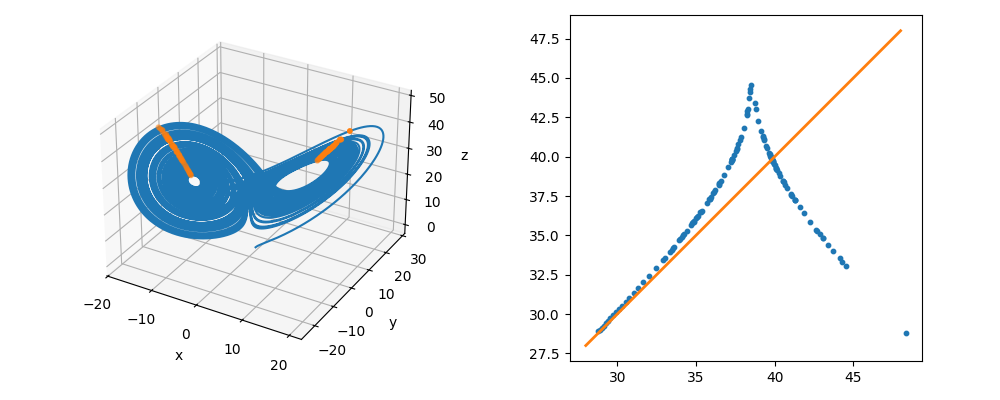
右側の図において, 青い点で (概形が) 表されるプロットとオレンジの線との交点が, この離散力学系の平衡点を表しているが, 実は青い点が表す写像の (平衡点近傍での) 傾きの絶対値は $1$ より大きく, 平衡点は不安定である. 従って $z_n$ は離散力学系の平衡点に収束することなく動き続けることになるが, これが実はローレンツ方程式の解のカオス的挙動と対応している.
ローレンツ写像をより簡略化した写像を例に, このことを確認してみよう. ここでは最も基本的な例として テント写像 \[ f(x) = \left\{\begin{array}{rl} 2x &\text{if }x\lt 1/2, \cr 2(1-x) &\text{if }x\gt 1/2 \end{array}\right. \] により表される離散力学系 $x_{n+1} = f(x_n)$ を考える. 平衡点が不安定であることは明らかであり, 実際に適当な初期値に対する解の挙動をグラフ反復法により図示すると, 複雑な挙動を観察することができる:
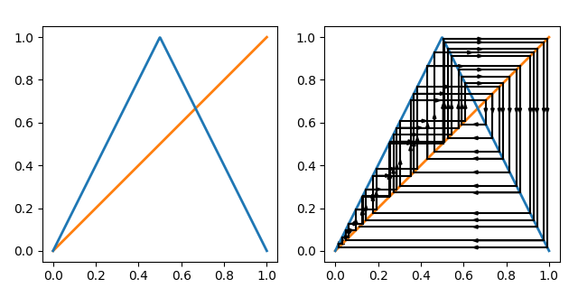
さて, この離散力学系が連続力学系のカオス的挙動に対応する性質を持つことを確認してみよう:
- 初期値鋭敏性を持つ. 実際, 例えば微小な差を持つ二つの点 $x$, $x+\delta \lt 1/2$ に対し, $f(x+\delta) - f(x) = 2\delta$ であるため, 写像 $f$ は微小な差を拡大する効果を持つ. 従って, 写像 $f$ を繰り返し適用することで, 初期値の微小な差による解の挙動の違いは指数的に拡大する.
- なお, このような作用は写像の幾何学的な解釈に基づき 引き伸ばし (stretching) と呼ばれる.
- 有界である. 実際, テント写像 $f:\mathbb{R}\to\mathbb{R}$ は, 定義域を $[0, 1]$ 区間に限れば値域も $[0, 1]$ 区間となるため, 解が発散してしまうことがない.
- テント写像は, 幾何学的には 折りたたみ (folding) によりこの性質が導出されていると説明される.
- ある種の "稠密性" を持つ. 写像 $f$ の不動点は離散力学系における不安定な平衡点であり, また $f^2, f^3, \dots,$ の不動点もそれぞれ対応する離散力学系における不安定な平衡点となるため, (適切な初期値に対する) 離散力学系の解はどこにも収束せず, また反復的な動き (離散力学系における周期軌道) に近づくこともない. 結果的に解は $[0, 1]$ 区間を埋め尽くすように動き続けることになる.
このような性質を持つ離散力学系は, 連続力学系と同様にカオスと呼ばれる. 特に上で述べた "引き伸ばし" と "折りたたみ" は, カオス的な離散力学系の典型的な特徴であると解釈される. 実際, テント写像も $y=x$ を引き伸ばして $y=2x$ と変形し, さらに $x=1/2$ で折り曲げたような形をしているし, ローレンツ写像も (ここでは概形しかわからないが) 同様に構成されるものとみなせる. 同様のアイデアに基づき構成される, より高次元の離散力学系においてカオスを導出する写像として 馬蹄形写像 (horseshoe map) がしばしば扱われる:
平面 $\mathbb{R}^2$ 上の正方形 $S$ に対して, $S$ を縦に引き伸ばした長方形を中央で折り曲げて馬蹄形に変形し, $S$ と重なるように配置した領域を $h(S)$ とする. このように構成される $h$ を馬蹄形写像という.
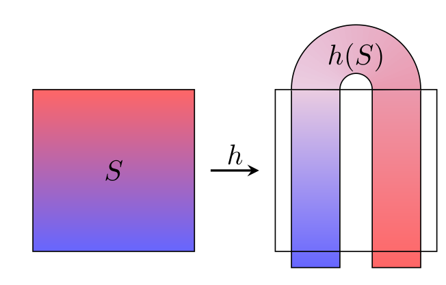
この写像も "引き伸ばし" と "折りたたみ" の構造を持つため, カオス的な離散力学系を導出することが知られる. 馬蹄形写像には様々な性質があり, カオスの本質を表す具体例として非常に重要な概念ではあるが, この資料ではこれ以上説明しない. 興味があれば成書などでより発展的な内容を学ぶと良いだろう.
数値計算: 数値分岐解析
簡単な問題に対しては, 手計算により分岐図を得ることができるが, 一般にはそうしたことが可能とは限らない. そのような場合に, 数値計算により分岐図を導出し, それをパラメータに依存する力学系の解の挙動の理解に役立てることがあるが, このアイデアは 数値分岐解析 と呼ばれる. 残念ながら, 一般的な状況まで含む数値分岐解析の手法は複雑であり, ここで全てを説明することは困難である. ここでは, 簡単な問題に限って分岐図を導出する数値計算を通じて, 分岐解析に用いられる数値計算のアイデアを紹介する.
まず, 簡単のために $1$ 次元力学系のみを対象とし, 分岐はサドルノード分岐, トランスクリティカル分岐, ピッチフォーク分岐のみを想定することにする. また, $f$ に対する適当な仮定の下で陰関数定理を適用することで, パラメータを動かした際の平衡点に軌跡 \[ \{(x, r) \in \mathbb{R}^2: f(x, r) = 0\} \] は, 分岐図の上で複数の曲線として表されるとする. この各曲線は $f(x,r) = 0$ の解曲線と呼ばれ, また分岐図における 枝 (branch) と呼ばれることがある.
さて, 一般にパラメータ $r$ を含む \[ f(x, r) = 0 \] の解曲線を追跡する数値計算手法として numerical continuation method が知られている (日本語訳はよくわからない). ここではその一つである 疑似弧長法 (pseudo-arclength continuation) を紹介しよう. 解曲線がパラメータ $s$ を用いて \[ \mathbf{y}(s) = (x(s), r(s)) \] と表されるとする, このとき $f(\mathbf{y}(s)) = 0$ であることに注意. いま, $\mathbf{y}(s_k)$ が与えられたとき, $\mathbf{y}(s_{k+1})$ は \[ \mathbf{y}(s_{k+1}) - \mathbf{y}(s_k) = \int_{s_k}^{s_{k+1}}\mathbf{y}'(s)~ds \] となることに基づき, $\mathbf{y}(s_{k+1})$ の予測値 $\widetilde{\mathbf{y}}_{k+1}$ を \[ \widetilde{\mathbf{y}}_{k+1} = \mathbf{y}(s_k) + \Delta s \mathbf{y}'(s_k) \approx \mathbf{y}(s_k) + \int_{s_k}^{s_{k+1}}\mathbf{y}'(s)~ds = \mathbf{y}(s_{k+1}) \] と定める, ここで $\Delta s = s_{k+1} - s_k$ であり, これは前進オイラー法による近似を意味している. なお, \[ f(\mathbf{y}(s)) = f(x(s), r(s)) = 0 \] の両辺を $s$ で微分することで \[ f_x(\mathbf{y}(s))\dfrac{dx}{ds}(s) + f_r(\mathbf{y}(s))\dfrac{dr}{dx}(s) = 0 \] となることから, 適当な $\alpha\in\mathbb{R}$ を用いて \[ \mathbf{y}'(s_k) = \left(\dfrac{dx}{ds}(s_k), \dfrac{dr}{ds}(s_k)\right) = \alpha(f_r(\mathbf{y}(s_k)), -f_x(\mathbf{y}(s_k))) \] という関係が成り立っていることがわかる. これを用いれば, (適当な $\alpha$ を用いて) $\widetilde{\mathbf{y}}_{k+1} = \mathbf{y}(s_k) + \Delta s \mathbf{y}'(s_k)$ を具体的に計算することが可能である. このようにして構成された近似値 $\widetilde{\mathbf{y}}_{k+1}$ は $f(\widetilde{\mathbf{y}}_{k+1}) = 0$ を満たすとは限らないが, これを基に適当に修正を加えれば, 解曲線上の点 $\mathbf{y}(s_{k+1})$ を得ることができるだろう.
このアイデアに基づき, 疑似弧長法では 解曲線上の与えられた点 $\mathbf{y}_k$ と十分小さなステップ幅 $\Delta s$ に対して, 以下を計算することで解曲線上の点 $\mathbf{y}_{k+1}$ を求める:
- まず, \[ \mathbf{v} = \dfrac{(f_r(\mathbf{y}_k), -f_x(\mathbf{y}_k))}{|f_x(\mathbf{y}_k)^2 + f_r(\mathbf{y}_k)^2|} \] を計算する.
- 次に, $\mathbf{y}_{k+1}$ の予測値を \[ \widetilde{\mathbf{y}}_{k+1} = \Delta s \mathbf{v} \] と定める.
- 最後に点 $\widetilde{\mathbf{y}}_{k+1}$ において $\mathbf{v}$ と直交する直線 (超平面) と解曲線の交点を, 以下をニュートン法で計算することで求め, その結果を $\mathbf{y}_{k+1}$ とする: \[ \mathbf{F}(\mathbf{y}) = \begin{pmatrix} f(\mathbf{y}) \cr (\mathbf{y}-\widetilde{\mathbf{y}}_{k+1})\cdot\mathbf{v} \end{pmatrix} = \mathbf{0}. \]
これを繰り返すことで得られる $\mathbf{y}_0$, $\mathbf{y}_1$, $\dots$ が, 解曲線の近似を与える.
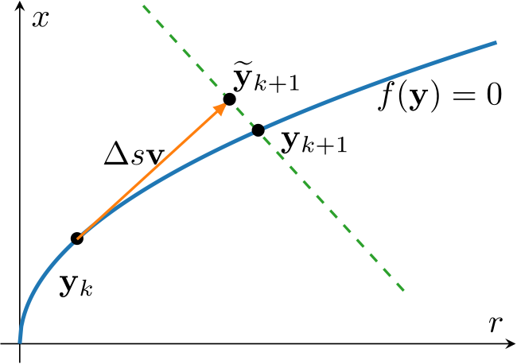
なお, 陽的な計算で求めた予測値を陰的な計算で修正する計算手法を 予測子修正子法 (Predictor-Corrector method) と呼ぶが, 疑似弧長法もその一種であると解釈することができる. また, 疑似弧長法は $2$ 次元以上の力学系にも拡張可能であるが, ここでは言及しない.
次に, 各 $\mathbf{y}_k$ における安定性は, $f_x(\mathbf{y}_k)$ の符号 ($2$ 次元以上の力学系では, $\mathbf{y}_k$ におけるヤコビ行列の固有値実部の符号) を調べることで確認できる. また, 符号が変化する点で分岐が起こっていることも判定できる (実際には様々な分岐を検出すためのテクニックが用いられるが, ここでは深入りしない).
ここまでの説明を実際の数値計算で確かめてみよう. 具体例として, 以前にピッチフォーク分岐が起こる具体例として紹介した \[ y' = f(x, r) = rx + x^3 - x^5 \] を用いることにする. 以下のサンプルコードでは初期値 $\mathbf{y}_0 = (x_0, r_0) = (x_0, -x_0^2 + x_0^4)$ を, $x_0 = 0.1$ とすることで決定している. この初期値を用いて疑似弧長法で解曲線をプロットしたものが, 分岐図における枝の一つになっていることを確認できる:
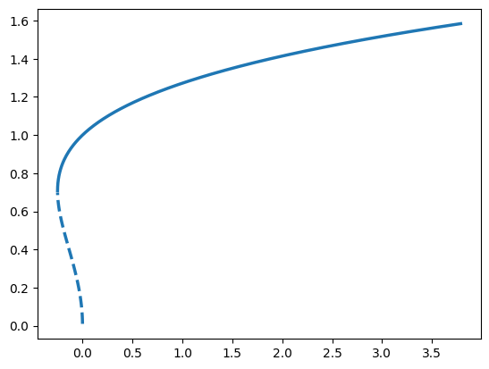
import numpy as np
import matplotlib.pyplot as plt
# 関数の定義
f = lambda x, r: r*x + x**3 - x**5
fx = lambda x, r: r + 3*x**2 - 5*x**4
fr = lambda x, r: x
# 疑似弧長法
def pseudo_arclength(y0: np.ndarray, ds: float = 0.01, n_steps: int = 500) -> np.ndarray:
# 配列の初期化
y = np.empty((2, n_steps+1))
y[:] = np.nan
y[:, 0] = y0
# 疑似弧長法の反復
for i in range(n_steps):
v = np.array([fr(y[0, i], y[1, i]), -fx(y[0, i], y[1, i])])
v = v / np.linalg.norm(v)
y_pred = y[:, i] + ds * v # 予測
y[:, i+1] = newton_corrector(y_pred, v) # ニュートン法で修正
return y
# 疑似弧長法内のニュートン法
def newton_corrector(y_pred: np.ndarray, v: np.ndarray, tol: float = 1e-8, max_iter: int = 30):
# ニュートン法の初期値
y = y_pred
# ニュートン法の反復
for _ in range(max_iter):
# ベクトル
F = np.array([
f(y[0], y[1]),
(y - y_pred) @ v
])
# ヤコビ行列
DF = np.array([
[fx(y[0], y[1]), fr(y[0], y[1])],
[v[0], v[1]]
])
delta = np.linalg.solve(DF, F)
y = y - delta # ニュートン法で更新
# 収束したら計算終了
if np.linalg.norm(delta) < tol:
return y
raise ValueError("Newton method did not converge.")
# プロットの準備
fig, ax = plt.subplots()
# 初期値を設定
y0 = [0.01, np.nan]
y0[1] = -y0[0]**2 + y0[0]**4
# 疑似弧長法で計算
y = pseudo_arclength(y0)
# 安定性の判定
fx_value = fx(y[0], y[1])
stable = fx_value < 0
unstable = fx_value > 0
# プロット
ax.plot(y[1, stable], y[0, stable], color='tab:blue', linewidth=2.5)
ax.plot(y[1, unstable], y[0, unstable], color='tab:blue', linewidth=2.5, linestyle='dashed')
plt.show()
異なる初期値から計算した結果も重ねてプロットすることで, 手計算で得られたものと同様の分岐図を得ることもできる (下図). ただし, 実際には分岐点の高精度な検出, $2$ 次元以上の力学系やホップ分岐を含む様々な分岐の追跡は容易ではない. 現在では数値分岐解析用の様々なソフトウェア, ライブラリなど (例えば AUTO, http://cmvl.cs.concordia.ca/auto/) が存在するため, 興味があれば調べてみると良いだろう.
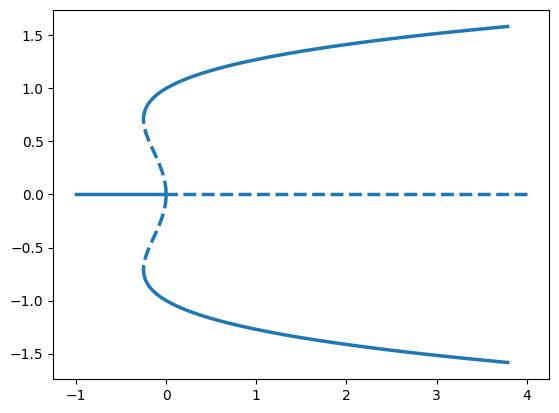